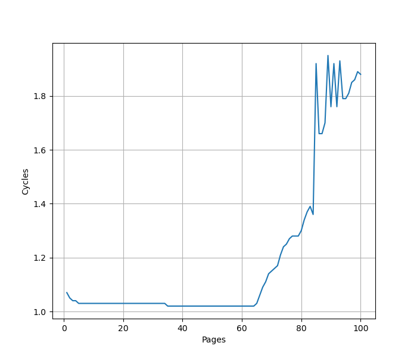
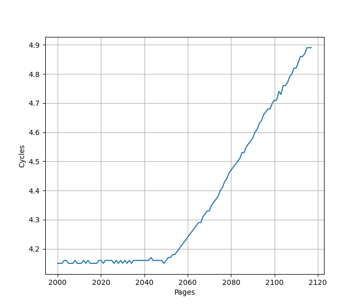
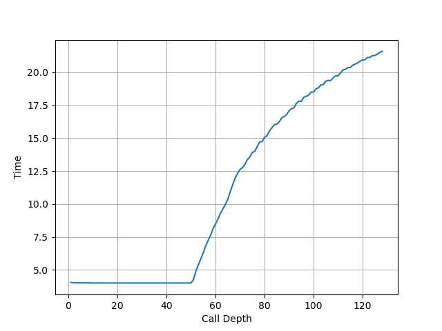
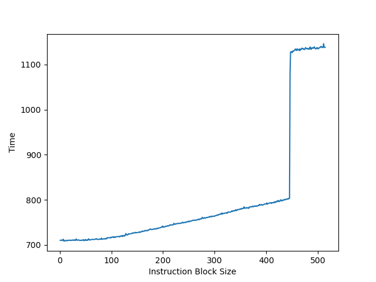
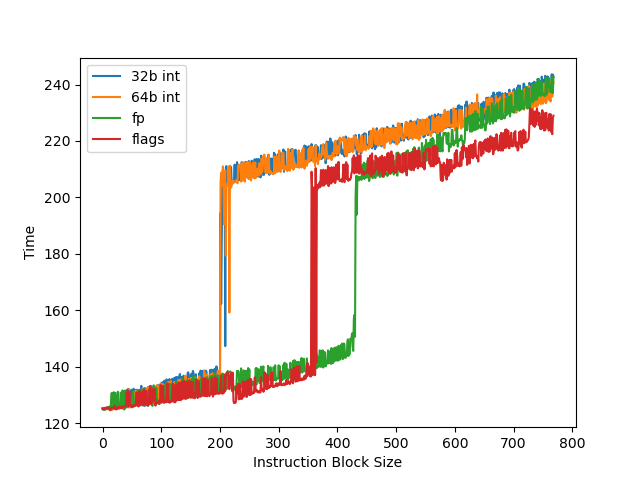

AMD Zen 5 微架构评测¶
背景¶
Zen 5 是 AMD 最新的一代微架构，在很多地方和之前不同，因此测试一下这个微架构在各个方面的表现。
官方信息¶
AMD 一向公开得比较大方，关于 Zen 5 的信息有：
- Software Optimization Guide for the AMD Zen5 Microarchitecture
- 5TH GEN AMD EPYC™ PROCESSOR ARCHITECTURE
现有评测¶
网上已经有较多针对 Zen 5 微架构的评测和分析，建议阅读：
- AMD Reveals More Zen 5 CPU Core Details
- Zen 5’s 2-Ahead Branch Predictor Unit: How a 30 Year Old Idea Allows for New Tricks
- Zen 5’s Leaked Slides
- AMD’s Strix Point: Zen 5 Hits Mobile
- AMD’s Ryzen 9950X: Zen 5 on Desktop
- Discussing AMD’s Zen 5 at Hot Chips 2024
- Zen 5 补充测试 (1/2): 更多微架构细节
- Zen5's AVX512 Teardown + More...
下面分各个模块分别记录官方提供的信息，以及实测的结果。读者可以对照已有的第三方评测理解。官方信息与实测结果一致的数据会加粗。
Benchmark¶
AMD Zen 5 的性能测试结果见 SPEC。
MOP vs uOP¶
MOP = Macro operation, uOP = Micro operation
AMD 的文档里是这么说的：
The processor implements AMD64 instruction set by means of macro-ops (the primary units of work managed by the processor) and micro-ops (the primitive operations executed in the processor's execution units). Instructions are marked as fast path single (one macro-op), fast path double (two macro-ops), or microcode (greater than two macro-ops). Macro ops can normally contain up to two micro-ops.
一条指令可以分成若干个 MOP（比如 REP MOVS 会拆成很多个 MOP），一个 MOP 可以继续细分为 uOP（比如 store 拆分成 store data 和 store address；把内存的值加到寄存器上的 add 指令拆分成 load 和 add）。Dispatch 的单位是 MOP，ROB 保存的也是 MOP。与 Zen3/Zen4 不同，Op Cache 保存的不是 MOP，而是 Fused Instructions，这个 Fusion 来自于 Branch Fusion 或 MOV + ALU Fusion。Fusion 相当于把多条指令合成了一个，减少了 MOP 的数量。
MOP 到 uOP 的拆分需要等到 Scheduler 中才进行，Scheduler 输入 MOP，输出 uOP，也就是说最终给到执行单元的是 uOP。
和 ARM 公版核的 MOP/uOP 对比，其实是很类似的：uOP 是执行单元看到的指令粒度，MOP 是维护精确异常的指令粒度。
前端¶
Op Cache¶
官方信息：64 set, 16 way, 1024 entry, 6 (fused) inst/entry, 供指 2 entry/cycle
开启/关闭¶
AMD 在 UEFI 固件中提供了关闭 Op Cache 的设置，因此我们可以测试在 Op Cache 开启/关闭不同情况下的性能。通过进一步研究，发现固件的 Op Cache 关闭设置，实际上对应了 MSR[0xc0011021] 的 bit 5：初始情况下，MSR[0xc0011021] 的值为 0x20000000000040，如果进入固件关闭 Op Cache，可以观察到 MSR[0xc0011021] 变成了 0x20000000000060。实际上，Op Cache 可以在进入 Linux 后动态开启/关闭（感谢 David Huang 在博客中提供的信息）：
sudo modprobe msr
# Disable Op Cache for Core 0
sudo wrmsr -p 0 0xc0011021 0x20000000000060
# Enable Op Cache for Core 0
sudo wrmsr -p 0 0xc0011021 0x20000000000040
因此开关 Op Cache 不需要重启进固件了。
容量¶
Zen 5 的 Op Cache 每个 entry 是 6 (fused) inst，为了测出 Op Cache 的容量，以及确认保存的是 fused inst，利用 MOV + ALU Fusion 来构造指令序列：
这两条指令满足 Zen 5 的 MOV + ALU Fusion 要求，硬件上融合成一个 rsi = rdx + rdi 的操作。做这个融合也是因为 x86 指令集缺少 3 地址指令，当然未来 APX 会补上这个缺失。实测发现，这样的指令序列可以达到 12 的 IPC，正好 Zen 5 的 ALU 有 6 个，也就是每周期执行 6 条融合后的指令，和 12 IPC 是吻合的。12 的 IPC 可以一直维持到 36KB 的 footprint，这里的 mov 和 add 指令都是 3 字节，换算下来 36KB 对应 36*1024/6=6144 个 fused instruction，正好 64*16*6=6144，对上了。关掉 Op Cache 后，性能下降到 4 IPC，对应了 Decode 宽度，同时也说明 Decode 的 4 Wide 对应的是指令，而不是融合后的指令。
吞吐¶
接下来要测试 Op Cache 能否单周期给单个线程提供 2 个 entry 的吞吐。由于每个 entry 最多可以有 6 (fused) inst，加起来是 12，而 dispatch 只有 8 MOP/cycle，因此退而求其次，不要求用完 entry 的 6 条指令，而是用 jmp 指令来提前结束 entry：
重复上述指令，发现在 5KB 之前都可以达到 4 的 IPC，之后则下降到 2 IPC，说明 5KB 时用满了 Op Cache。这里的 mov 指令是 3 字节，jmp 指令是 2 字节，也就是说 5KB 对应上述指令模式重复了 1024 次，此时 Op Cache 用满了容量，正好 Op Cache 也是 64*16=1024 个 entry，印证了 Op Cache 的 entry 会被 jmp 提前结束，在上述的指令模式下，entry 不会跨越 jmp 指令记录后面的指令，每个 entry 只有两条指令。那么 4 IPC 证明了 Op Cache 可以每周期提供 2 entry，相比 Decode 只能每周期给单线程提供 4 条指令明显要快。
取指¶
官方信息：每周期共 64B，可以取两个 32B 对齐的指令块
为了测试取指，需要关掉 Op Cache，但由于 Decode 瓶颈太明显，不容易测出取指的性能，例如是否一个周期可以给单线程取两个 32B 对齐的指令块。目前通过实测可以知道，在关闭 Op Cache 的情况下，测试循环体跨越 64B 缓存行边界的情况，指令模式见下：
循环一次需要 1.5 个周期。如果 Fetch 每周期只能取一个 32B/64B 对齐的指令块，那么一次循环需要 2 个周期来取指，但如果 Fetch 每周期可以取两个 32B 对齐的指令块，那么一次循环只需要 1 个周期取指，但实际测出来又是 1.5 个周期，目前还没有找到合理的解释，但大概率 Fetch 还是可以给单线程每周期提供两个 32B 指令块。
Decode¶
官方信息：2x 4-wide decode pipeline, one pipeline per thread
AMD Zen 5 的 Decode 虽然有两个 Pipe，但是每个逻辑线程只能用一个，意味着单线程情况下，无法做到 8-wide Decode，而 4-wide Decode 又太窄了点，因此 Op Cache 的命中率就显得很重要。
为了测试 Decode，需要首先按照上面的方法关闭 Op Cache，然后构造不同的指令序列以观察 IPC，得到的结果如下：
- 重复 1-4 字节 nop：4 IPC
- 重复 5 字节 nop：3.2 IPC
- 重复 6 字节 nop：2.67 IPC
- 重复 7 字节 nop：2.3 IPC
- 重复 8 字节 nop：2 IPC
- 重复 9 字节 nop：1.78 IPC
- 重复 10 字节 nop：1.6 IPC
- 重复 11-15 字节 nop：1 IPC
上述 nop 的编码取自 Software Optimization Guide 的 Encodings for NOP Instructions 1 to 15 表格。
首先可以看到 Zen5 4-wide Decode 的限制，其次可以发现重复 5-10 字节的 nop，每周期的 Decode 吞吐都是 16B。11 字节以上则是撞到了 Decode 的限制：Only the first decode slot (of four) can decode instructions greater than 10 bytes in length。
比较有意思的是这个 16B 的限制，考虑移动窗口的译码设计，每周期可以对两个连续 16B 的窗口译码（IBQ entries hold 16 byte-aligned fetch windows of the instruction byte stream. The decode pipes each scan two IBQ entries.），在 5 字节的 nop 模式下，每个周期的 Decode 应该是：
- Cycle 0: Window 0-31, Decode 0, 5, 10, 15
- Cycle 1: Window 16-47, Decode 20, 25, 30, 35
- Cycle 2: Window 32-63, Decode 40, 45, 50, 55
- Cycle 3: Window 48-79, Decode 60, 65, 70, 75
- Cycle 4: Window 80-111, Decode 80, 85, 90, 95
按这个理想的方法来看，应该可以做到 4 的 IPC，但实际上没有。一个猜测是，滑动窗口每次只能移动 1 个 16B，而不能从 48 跳到 80，那么从 Cycle 4 开始会出现性能损失：
- Cycle 4: Window 64-95, Decode 80, 85, 90
- Cycle 5: Window 80-111, Decode 95, 100, 105
- Cycle 6: Window 96-127, Decode 110, 115, 120
- Cycle 7: Window 112-143, Decode 125, 130, 135
- Cycle 8: Window 128-159, Decode 140, 145, 150, 155
这个规律延续下去，平均下来就是 3.2 IPC。
根据这个猜想，Decode 从两个连续的 IBQ entry 译码最多四条指令，是没有 16B 的限制的，但 IBQ 每周期只能弹出一个 entry，而不允许每周期弹出两个，这才导致了 16B 的吞吐。总之，4-wide 以及 16B 的限制，应该说是很小的。
L1 ICache¶
官方信息：32KB, 8-way set associative
为了测试 L1 ICache 的容量，需要关闭 Op Cache，但由于 Decode 的限制，即使 footprint 大于 L1 ICache 容量，IPC 依然没有变化，针对这个现象，猜测 L1 ICache 的预取在起作用，并且 L2 Cache 到 L1 ICache 的 Refill 带宽不小于 Decode 带宽，导致瓶颈在 Decode。
因此，为了测试 L1 ICache 的容量，构造一个 jmp 序列，以 4B 位间距排布，观察到在关闭 Op Cache 的情况下，在 8192 条 jmp 指令之前可以做到 1 CPI，之后逐渐提升到 1.5 CPI，正好 8192 对应了 8192*4=32768 也就是 32KB L1 ICache 的容量限制。
L1 ITLB¶
官方信息：64-entry, fully associative
为了测试 L1 ITLB 的容量，构造 jmp 序列，每个 jmp 在一个单独的页中，在关闭 Op Cache 的情况下观察 jmp 的性能：

可以看到明显的 64 pages 的拐点，对应了 64 entry 的 L1 ITLB。
L2 ITLB¶
官方信息：2048-entry, 8-way set associative L2 ITLB
继续沿用测试 L1 ITLB 的方式，把页的数量提高到 2000+，在关闭 Op Cache 的情况下得到以下测试结果：

可以看到明显的 2048 pages 的拐点，对应了 2048 entry 的 L2 ITLB。
BTB¶
官方信息：16K-entry L1 BTB, 8K-entry L2 BTB
因为 L1 ICache 只有 32KB，而 L1 BTB 有 16K entry，每个 entry 最多能保存两条分支指令，因此多数情况下，首先遇到的是 L1 ICache 的瓶颈，而不是 L1 BTB 的瓶颈。
Return Address Stack¶
官方信息：52-entry per thread
构造不同深度的调用链，测试每次调用花费的时间，在关闭 Op Cache 的情况下得到如下测试结果：

可以看到 52 的拐点，对应的就是 Return Address Stack 的大小。
Indirect Target Predictor¶
官方信息：3072-entry Indirect Target Array
Move Elimination (Zero Cycle Move) and Zeroing/Ones Idiom¶
官方信息：支持 xor/sub/cmp/sbb/vxorp/vandnp/vpcmpgt/vpandn/vpxor/vpsub 的 Zeroing Idiom，支持 pcmpeq/vpcmpeq 的 Ones Idiom，支持 mov/movsxd/xchg/(v)vmovap/(v)movdp/(v)movup 的 Zero Cycle Move。
实测下来，以下指令序列的 IPC 为：
- 有依赖链的 mov r, r：7 IPC
- 没有依赖的 mov r, r：7 IPC
- xor r, r, r：7 IPC
- sub r, r, r：7 IPC
- 有依赖链的 mov vr, vr：6 IPC
- 没有依赖的 mov vr, vr：6 IPC
- xor vr, vr, vr：6 IPC
- mov r, imm：6 IPC
其中 r 表示整数寄存器，vr 表示浮点/向量寄存器。总体来说还是做的比较完善的。
Dispatch¶
官方信息：8 MOP/cycle, up to 2 taken branches/cycle
后端¶
ROB¶
官方信息：224-entry per thread, 1-2 MOP per entry
把两个独立的 long latency pointer chasing load 放在循环的头和尾，中间用 NOP 填充，当 NOP 填满了 ROB，第二个 pointer chasing load 无法提前执行，导致性能下降。测试结果如下：

当 NOP 指令达到 446 条时出现性能突变，此时应该是触发了 Zen 5 的每个 entry 保存两个 MOP 的条件，因此 446 条 NOP 指令对应 223 个 entry，加上循环开头的 load 指令，正好把循环尾部的 load 拦在了 ROB 外面，导致性能下降。
说明单线程可以访问到的 ROB 容量是 224 entry。
Register File¶
官方信息：240-entry(40 per thread for architectural) integer physical register file, 192-entry flag physical register file, 384-entry 512b vector register file
为了测试物理寄存器堆大小，构造一个循环，循环开头和结尾各是一个长延迟的操作，由于 Zen 5 没有实现 temporal prefetcher，使用的是 pointer chasing load。然后在两个长延迟的操作中间穿插不同的指令类型，从而测出对应的物理寄存器堆可供预测执行的寄存器数量：

整数方面使用 lea 指令来消耗整数物理寄存器而不消耗 flags 寄存器，此时无论是 32 位还是 64 位寄存器，供预测执行的寄存器数都有 200 个，和官方的信息吻合：200+40=240，说明超线程在没有负载的时候，不会占用整数物理寄存器堆，这在 AMD 的文档中叫做 Watermarked：Resource entries are assigned on demand。356 个 flags 寄存器超过了官方宣传的 192 的大小，猜测做了一些优化，测到的并非 flags 寄存器堆大小。
浮点方面，测得 430 个供预测执行的浮点寄存器，超过了官方宣传的 384 个 512 位浮点寄存器。考虑到 Zen5 引入了在 Rename 之前的 96-entry Non-Scheduling Queue(NSQ)，在 NSQ 中的指令还没有经过重命名，因此不消耗物理寄存器：384+96=480，再去掉至少 32 个架构寄存器 zmm0-zmm31，和观察到的 430 是比较接近的。
针对浮点寄存器，Zen5 的不同平台的设计不完全一样，上面的测试是在 9950X 上进行的，其他平台的测试以及分析见 Zen5's AVX512 Teardown + More...。
L1 DCache¶
官方信息：48KB, 12-way set associative
使用不同 footprint 的随机的 pointer chasing load，测试性能，得到如下结果：

可以观察到明显的 48KB 的拐点，命中 L1 DCache 时 load to use latency 是 4 cycle，命中 L2 时增大到了 14 cycle。
Load Store Unit¶
官方信息：每周期最多四个内存操作。每周期最多四个读，其中最多两个 128b/256b/512b 读；每周期最多两个写，其中最多一个 512b 写。load to use latency，整数是 4-5 个周期，浮点是 7-8 个周期。跨越 64B 边界的读会有额外的一个周期的延迟。支持 Store to load forwarding，要求先前的 store 包括了 load 的所有字节，不要求对齐。
吞吐¶
实测 Zen 5 每个周期可以完成如下的访存操作：
- 4x 32b Load: 1 cycle
- 4x 64b Load: 1 cycle
- 2x 128b Load: 1 cycle
- 2x 256b Load: 1 cycle
- 2x 32b Store: 1 cycle
- 2x 64b Store: 1 cycle
- 2x 128b Store: 1 cycle
- 2x 256b Store: 1 cycle
- 1x 64b Load + 2x 64b Store: 1 cycle
- 2x 64b Load + 2x 64b Store: 1 cycle
- 3x 64b Load + 1x 64b Store: 1 cycle
- 1x 128b Load + 2x 128b Store: 1 cycle
- 2x 128b Load + 1x 128b Store: 1 cycle
简单来说，每周期支持 4 个 64b 的 Load/Store，其中 Store 最多两条。一个 128b 的 Load 相当于两个 64b，对应 IPC 减半。
延迟¶
构造串行的 load 链，观察到多数情况下 load to use latency 是 4 个周期，在跨越 64B 边界时，会增加一个周期变成 5 个周期。此外，如果涉及到 index 计算（即 offset(base, index, shift)），也会增加一个周期。
Store to Load Forwarding¶
经过实际测试，如下的情况可以成功转发：
对地址 x 的 Store 转发到对地址 y 的 Load 成功时 y-x 的取值范围：
| Store\Load | 8b Load | 16b Load | 32b Load | 64b Load |
|---|---|---|---|---|
| 8b Store | {0} | {} | {} | {} |
| 16b Store | [0,1] | {0} | {} | {} |
| 32b Store | [0,3] | [0,2] | {0} | {} |
| 64b Store | [0,7] | [0,6] | [0,4] | {0} |
可以看到，Zen 5 在 Store 完全包含 Load 的情况下都可以转发，没有额外的对齐要求。但当 Load 和 Store 只有部分重合时，就无法转发。两个连续的 32 位的 Store 和一个 64 位的 Load 重合也不能转发。
可见 Zen 5 的 Store to Load Forwarding 实现比较粗暴，只允许 Load 从单个完全包含 Load 的 Store 中转发数据。和 Neoverse V2 相比，Zen 5 对 Load 在 Store 内的偏移没有要求，但也不允许 Load 和 Store 只有一部分覆盖，也不支持一个 Load 从两个或更多的 Store 中获取数据。
成功转发时 8 cycle，有 Overlap 但转发失败时 14-15 cycle。
小结：Zen 5 的 Store to Load Forwarding：
- 1 ld + 1 st: 要求 st 包含 ld
- 1 ld + 2+ st: 不支持
L1 DTLB¶
官方信息：96-entry, fully associative
使用不同 footprint 的随机的 pointer chasing load 且每次 load 都在单独的页内，测试性能，得到如下结果：

可以观察到明显的 96 page 的拐点，命中 L1 DTLB 时 load to use latency 是 4 cycle，命中 L2 DTLB 时增大到了 11 cycle。
L2 DTLB¶
官方信息：4096-entry, 16-way set associative
L2 Cache¶
官方信息：16-way set associative, inclusive, 1MB, >= 14 cycle load to use latency
L3 Cache¶
官方信息：16-way set associative, exclusive
执行单元¶
官方信息：Zen 5 的后端有 6 条 ALU 流水线，4 条访存流水线，4 条 512 位宽向量流水线（其中 2 条支持 FMA），2 条向量访存流水线
实测发现 Zen 5 每周期最多可以执行 2 条 AVX512 的浮点 FMA 指令，也就是说，每周期浮点峰值性能：
- 单精度：
512/32*2*2=64FLOP per cycle - 双精度：
512/64*2*2=32FLOP per cycle
通过 512 位的浮点 datapath，终于达到了第一梯队的浮点峰值性能。